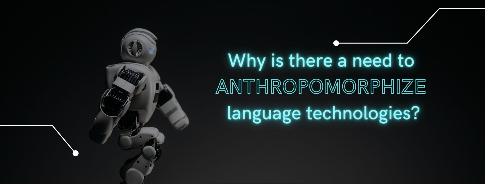

Tags: hci, language, conversation

Some weeks ago, we heard about Blake Lemoine, a Google engineer who claimed that LaMDA, a chatbot that can carry unstructured conversations with people, had a 'human soul'. He came to this conclusion after having long, deep conversations with LaMDA, which he later shared with The Washington Post.
What's striking about this case is that an engineer, who's supposed to have a thorough technical knowledge about how chatbots work, was fooled into believing the chatbot was actually human! We call this phenomenon the Turing test: if a human can't tell whether they're having a conversation with a real human or a machine, the chatbot, in this case, is said to pass the test.
The question here is: Why are humans the gold standard in conversational AI? Why do we expect human-computer interactions to be like human-human interactions? The answer is anthropomorphism.
The term anthropomorphism comes from the Greek anthropos (man) and morphe (form). It refers to the psychological phenomenon by which people attribute human characteristics to non-human objects. Anthropomorphism is not restricted to technology, but it's rather something we do all the time (who hasn't talked to their dog or their stuffed animal at least once in their life?).
In the case of language technologies, such as chatbots, research has shown that people approach human-computer interactions as if these were human-human interactions. In fact, anthropomorphizing language technologies has several benefits:
It builds trust. People tend to have more pleasant experiences when they interact with a device that resembles an actual human, so the more natural (aka. human-like) the conversation is, the better!
It makes language technologies more marketable. Most conversational devices are designed to be used at home with our families. Therefore, anthropomorphizing language technologies makes us more willing to welcome them in our intimate spaces.
It fulfills our need for social connections. People are biased towards human behavior. This means that we seek ways to connect and interact with other people. Because of this need, interacting with what apparently seems to be a human entity, makes the interaction smoother.
So far, you might think that anthropomorphizing language technologies is great. However, it also has some negative effects.
If we make people believe they are interacting with an actual human, they might have high expectations and might become eventually frustrated when they find out their device is actually pretty limited. In other words, anthropomorphizing language technologies blinds people from the real possibilities and limitations of conversational AI, in this case. This is exactly what happened in Lemoine's case: LaMDA was built to have conversations in such a natural way that Lemoine ended up believing the device had a human soul.
Unfortunately, media representations of AI also feed this idea. Any popular newspaper or magazine discussing any aspect of AI is (almost) always accompanied by pictures of human-like robots or other intelligent beings which are far from reality. In fact, current AI applications are closer to hundred of lines of code hosted on a cloud server. As long as we continue using these narratives, cases such as Lemoine's are bound to happen.
Luckily, some institutions have already warned about this and are trying to challenge the current predominant narrative surrounding AI in the Western world (for example, the Royal Society. As professionals working in tech, I think we should also help dispel current myths and educate the public about the real capabilities of AI applications.